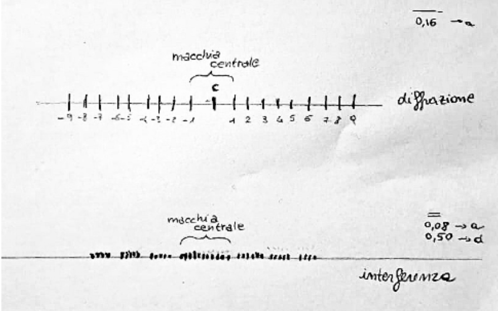

Esperimenti su fenomeni di Interferenza e Diffrazione
Introduzione
I fenomeni di diffrazione e interferenza sono regolati da un modello fisico-matematico molto preciso e relativamente semplice. Abbiamo eseguito i seguenti esperimenti per comprendere il significato pratico della teoria studiata. Il primo obiettivo sarà quello di calcolare la lunghezza d’onda del laser (coerente e monocromatico) a partire da dati presi a mano e attraverso sensori di luminosità . Poi si procederà a confrontare i grafici di entrambi i fenomeni con i rispettivi modelli, per trovare somiglianze e differenze.
Teoria
Nomenclatura
𝑑 - distanza tra le fenditure
𝑎 - ampiezza di una fenditura
𜃠- angolo rispetto al raggio centrale
𝐿 - distanza fenditura-schermo
𑦠- distanza centro-punto d’incidenza
𑘠- indice (max/min) dal centro
𜆠- lunghezza d’onda
Applicazioni
Diffrazione e interferenza sono due fenomeni distinti. Entrambi sono regolati da una legge simile, che assume due significati diversi. Per assistere a fenomeni di diffrazione è sufficiente una sola fenditura, mentre per l’interferenza ne servono due. Per questo motivo, si pos- sono verificare fenomeni di diffrazione netti, ma non fenomeni di interferenza senza una diffrazione imposta. Infatti, oltre a produrre un’interferenza in presenza di due o più fenditure, ognuna di queste produrrà anche una propria diffrazione. La formula alla base di questi fenomeni è:
\[d \sin\theta = k \lambda\] {#eq:1}
\[a \sin\theta = k \lambda\] {#eq:2}
Per ogni k, questa formula rappresenta un massimo locale di luminosità (interferenza) o un minimo (diffrazione), con il massimo assoluto che si trova sempre nel mezzo (𜃠= 0) Come nella figura, d | a rappresenta la distanza tra le fenditure per i fenomeni di interferenza o l’ampiezza di una fenditura in caso di dif- frazione. In presenza di angoli piccoli (soprattutto nell’interferenza), il seno dell’angolo è approssimativamente il rapporto y / L, poiché:
\[ \sin \theta = \tan \theta = \frac{y}{L} \] {#eq:3}
Questo è tutto ciò che serve per calcolare la lunghezza d’onda dai dati sperimentali. La parte successiva dell’esperimento consiste nel confrontare i grafici dell’intensità luminosa nei casi di diffrazione e interferenza (con diffrazione sovrapposta) con i corrispondenti modelli matematici.
Quella di diffrazione è piuttosto semplice, data da questa formula:
\[ I = I_{0}\left(\frac{\sin^2\phi}{\phi^2}\right) \] {#eq:4}
con \(\phi\):
\[ \phi = \frac{\pi a \sin\theta}{\lambda} \]
Quello dell’interferenza è piuttosto complesso, poiché contiene una parte che riguarda l’interferenza stessa e una che calcola la diffrazione prodotta dalle due singole fenditure.
\[ I = I_{0} \cos^2 \left(\frac{\pi d \sin\theta}{\lambda}\right) \left(\frac{\sin\frac{\pi a \sin\theta}{\lambda}}{\frac{\pi a \sin\theta}{\lambda}}\right)^2 \] {#eq:5}
La prima parte, che considera d (distanza tra le fenditure) è quella dell’interferenza vera e propria. La seconda calcola l’effetto della diffrazione dalle fenditure singolarmente considerate. Infatti, utilizza come parametro a (ampiezza di una fenditura).
Apparato Sperimentale
L’apparato sperimentale comprende i seguenti strumenti:
• Schermo bianco
• Scanner di luminosità wireless
• Fenditure di diffrazione e interferenza
• Laser rosso (650 nm)
• Barra ottica metallica, 1,2 m
Lo schermo bianco e lo scanner sono stati utilizzati rispettivamente per le misure manuali e per l’acquisizione dei dati digitali.
I dati sono stati acquisiti tramite il software PASCO Capstone, esportati come file csv e successivamente analizzati in Python.
Parametri Costanti
Durante l’intero esperimento, questi sono stati i parametri costanti:
L = 0,9 m
a (diffrazione) = 0,16 mm
d (interferenza) = 0,5 mm
a (interferenza) = 0,08 mm
Calcolo delle Lunghezze d’Onda
Possiamo calcolare la lunghezza d’onda in entrambi gli esperimenti, con misurazioni manuali e analisi dei dati digitali acquisiti. Per cal- colare la lunghezza d’onda, abbiamo utilizzato l’equazione 1 per l’interferenza e l’equazione 2 per la diffrazione nella loro forma inversa combinata con l’equazione 3.
\[ \lambda = \frac{\gamma y}{k L} \]
Nella quale \(\gamma\) rappresenta \(a\) o \(d\).
Misure Manuali
Il passo successivo consiste nell’appoggiare un foglio di carta sullo schermo bianco, sul quale viene proiettato il pattern creato dal laser passante attraverso la fenditura. In questo modo è possibile misurare massimi e minimi con una matita e un righello (i dati 𝑦), per fare una stima della lunghezza d’onda.

Diffrazione
Considerando l’ampiezza 𝑎 = 0, 16 mm e il secondo minimo del modello, che si trova a 𑦠= ±7, 5 mm con 𑘠= 2, si ottiene:
\[ \lambda = \frac{a y}{k L} = \frac{0.16 \times 10^{-3} \times 7.5 \times 10^{-3}}{2 \times 0.9} = 6.66\times 10^{-7} \]
Poiché la lunghezza d’onda dichiarata è di 650 nm, il risultato ottenuto da questa misura è praticamente corretto (errore del 2,46%). I test con 𑘠= 3 e 𑦠= 11, 0 mm probabilmente confermeranno il risultato:
\[ \lambda = \frac{a y}{k L} = \frac{0.16 \times 10^{-3} \times 7.5 \times 10^{-3}}{2 \times 0.9} = 6.66\times 10^{-7} \]
Con questo approccio manuale, è più facile e più affidabile misurare distanze dal centro più lunghe (per valori più alti di 𝑘) poiché le misure con i righelli non sono abbastanza precise. In questo caso si è ottenuto un errore di 0,15%.
Interferenza
Le uniche differenze con l’interferenza sono che il valore di 𝑑 = 0, 5 mm è quello che conta e i massimi relativi (che sono molto più vicini che nella diffrazione) sono quelli rappresentati da multipli interi di 𝑘. Per 𑘠= 9 i picchi si trovano a 𑦠= ±11 mm:
\[ \lambda = \frac{d y}{k L} = \frac{0.5 \times 10^{-3} \times 11 \times 10^{-3}}{9 \times 0.9} = 6.79 \times 10^{-7} \]
Le misure manuali sull’interferenza hanno dato risultati peggiori (con un errore del 4,46%) rispetto a quelle sulla diffrazione, probabil- mente perché i massimi molto vicini rendono più difficile ottenere dati regolari e precisi su cui basare la stima. Le diverse percentuali di errori ottenuti suggerisce che l’estrapolazione manuale dei dati è un metodo poco coerente da applicare.
Misure tramite Sensori
Gli stessi dati vengono rilevati con un sensore di luminosità mobile, collegato al computer tramite Bluetooth. Sul dispositivo è possibile regolare l’esposizione del sensore e altri parametri tramite software, come la frequenza di campionamento. Durante la registrazione, il software compila un file csv contenente i seguenti parametri:
• tempo (ogni 𝑓−1 secondi)
• posizione del sensore
• intensità luminosa rilevata
• logaritmo dell’intensitÃ
Facendo scorrere il sensore longitudinalmente rispetto al raggio laser, registra per ogni frazione di campionamento tutti questi dati. Si ottiene così un file contenente i dati del fenomeno proiettato sullo schermo del sensore. Avendo accesso alla totalità dei dati, è possibile effettuare stime più precise sulle lunghezze d’onda. Infatti, facendo la media dei dati raccolti ai vari k, possiamo ragionevolmente aspettarci risultati abbastanza precisi. A questo scopo sono state utilizzate due semplici funzioni Python (una per la diffrazione e una per l’interferenza). I parametri da prendere in considerazione sono l’intervallo su cui applicare l’analisi, i valori di 𑘠in esso contenuti e i rispettivi valori di 𑦠(max o min). Questo può essere espresso come:
\[ \lambda_m = \frac{\sum_{k = -k_{max}}^{k_{max}}\frac{\gamma y_k}{k L}}{|2k_{max}|} \]
In cui ğ‘˜ğ‘šğ‘ğ‘¥ indica il valore assoluto dell’indice di campionamen- to massimo su cui operare e 𛾠sta per 𝑎 o 𝑑. ğœ†ğ‘š è il valore me- dio di 𜆠nell’intervallo di dati considerato. Un intervallo più am- pio fornirà sempre una maggiore precisione. Ecco un esempio di implementazione:
def wavelength_interference(dataset):
wls = []
for i in dataset:
wls.append((d*(i[1] - imaxd))/(L*i[0]))
wl = sum(wls) / len(wls)
return wlAssumendo che “dataset†sia un elenco contenente liste di due dimensioni, con valori ordinati di 𑘠e i rispettivi 𝑦, questa funzione calcola la lunghezza d’onda media, considerando 𝐿 e 𛾠costanti. 𑦠è calcolato come distanza relativa dal massimo assoluto. In questo modo, la funzione non è l’equivalente esatto dell’equazione 11, poiché calcola la media indipendentemente dall’ordine dei dati. Per seguire esattamente l’equazione, i dati devono essere passati in questo modo:
data = [
[1, 77.08e-3],
[2, 78.27e-3],
[3, 79.45e-3],
[-1, 74.76e-3],
[-2, 73.58e-3],
[-3, 72.48e-3]
]Gli interi agli indici zero sono i valori 𑘠e i float agli indici uno i rispettivi valori 𝑦. Si tratta sempre di dati estratti a mano dal file csv e copiati nel file python senza alcuna automazione. È infatti un’operazione complicata estrapolare le posizioni dei minimi relativi, soprattutto nel caso di interferenza con diffrazione sovrapposta.
Diffrazione
I dati di diffrazione vengono passati alla funzione, che calcola il risultato della lunghezza d’onda media e il suo errore in percentuale.
print(wavelength_diffraction(ddata),
(650e-9 - wl_diffraction(ddata)/(650e-9))*100)>>> 6.497962962962964e-07, 0.03133903133902223Con valori di 𑘠compresi tra -4 e +4, il risultato è esatto, con solo lo 0,03% di errore sui 650 nm dichiarati.
Interferenza
print(wavelength_interference(idata),
((650e-9 - wl_interference(idata))/(650e-9))*100)>>> 6.470679012345684e-07, 0.451092117758719I valori di 𑘠variavano in questo calcolo da -3 a +3. L’errore in questo caso è 10 volte superiore, con uno 0,4%. Ciò è probabilmente dovuto al fatto che lo strumento di misura era più adatto a rilevare differenze di luminosità in intervalli di posizioni maggiori rispetto a quelle prodotte da un fenomeno di interferenza. I dati considerati nel calcolo attraversano la gamma di diffrazione per un totale di 30 mm, mentre quelli di interferenza sono racchiusi in un intervallo totale di soli 7 mm.
Considerazioni sul calcolo della Lunghezza d’Onda
La raccolta di dati per stimare la lunghezza d’onda mediante misura- zioni manuali può produrre risultati abbastanza vicini a quelli reali, ma non è sicuramente un metodo affidabile e ripetibile da applicare. L’aiuto del computer è sicuramente un vantaggio, ma bisogna fare at- tenzione a calibrare correttamente gli strumenti al momento del cam- pionamento per evitare frequenze di campionamento insufficienti, sovra o sotto saturazione del sensore.
Grafici e Comparazione con i Modelli Teorici
Avendo a disposizione una serie molto densa di dati registrati in labo- ratorio a frequenze di 50 hz per entrambi gli esperimenti, possiamo aspettarci che un grafico di tali dati possa rappresentare abbastanza accuratamente il fenomeno fisico studiato. Per verificare ciò, con- fronteremo i grafici dei dati sperimentali con quelli dei dati teorici, derivati dalle equazioni 4 e 6, sotto forma di funzioni 𝐼 della variabile 𝑦. I set di dati sono stati analizzati in due file .ipynb separati. Questo formato di file consente all’utente di scegliere quale parte del codice eseguire e questa caratteristica è molto utile quando si lavora con i dati e i grafici per individuare facilmente errori o bug.
Diffrazione
Curva Sperimentale
Per analizzare i dati sperimentali, si importa il dataset in formato .csv in Python e lo si converte in formato tabellare utilizzando la nota libreria Pandas. Le colonne più rilevanti sono quelle relative alla posizione e alla percentuale di intensità in quel punto. Il processo di pulizia dei dati prevede solo una normalizzazione dei valori di intensità tra 0 e 100, una relativizzazione dei dati di posizione rispetto al picco di intensità , che assume valore 0, e una restrizione del dominio tra due valori arbitrari equidistanti dal massimo. L’intero processo si trova commentato nel file diffraction.ipynb. Tracciando poi i valori finali, il risultato è il seguente:
Questa curva rispecchia un classico modello di diffrazione, quindi possiamo ritenere che i nostri dati siano corretti.
Modello Teorico
Per la curva teorica, si utilizza l’equazione 4 trasformandola in funzione di 𝑦. In realtà 𑦠non compare esplicitamente in tale equazione, ma solo come parametro dell’angolo ğœƒ.
L’angolo di diffrazione rispetto al raggio laser che stiamo misurando è piuttosto piccolo: avendo una distanza dal sensore di 0,9 m e una 𑦠massima di 0,075 m, l’angolo risulterebbe \(\theta = \arctan\frac{0,9}{0,075} = 4,76^{\circ}\).
Come visto nella sezione dedicata alla teoria, il seno di tale angolo può essere approssimato a sin 𜃠= 𑦠ğ¿ . Tuttavia, avendo a disposizione un computer e non dovendo fare calcoli a mano, si preferisce proce- dere senza alcuna approssimazione (quindi con sin 𜃠= sin arctan 𑦠ğ¿ ), in modo da ottenere un risultato il più preciso possibile. Queste considerazioni giustificano la seguente funzione:
\[ I(y) = I_{0}\left(\frac{\sin^2\phi}{\phi^2}\right) \, | \, \phi = \frac{\pi a \sin\arctan\frac{y}{L}}{\lambda} \]
Questa funzione può essere codificata come segue in Python:
def teorical_intensity(y, L, lmb, a):
sintheta = math.sin(math.atan((y * 1e-3) / L))
phi = (PI * a * sintheta)/lmb
I = Izero * ((math.sin(phi)**2) / (phi**2))
return IL’unica variabile vera è 𝑦, mentre 𝐿, 𜆠e 𝑎 sono parametri costanti. Iterando tale funzione per 0,15 m con un passo di 0,0001 m, utilizzan- do quindi lo stesso intervallo di campionamento dei dati sperimen- tali, si ottiene un array composto da sottoarray contenenti un valore arbitrario di 𑦠(quello iterato) e il rispettivo valore di 𝐼
teorical_curve = []
lamb = 6.5e-7
L = 0.9
a = 0.16e-3
for i in np.arange(0, 150, 0.1):
teorical_curve.append(
[i, teorical_intensity(relx(i), L, lamb, a)]
)Applicando le stesse strategie di pulizia dei dati utilizzate per quella sperimentale, il grafico risultante è il seguente:
Anche questo grafico rappresenta bene il fenomeno della diffrazio- ne, quindi possiamo dire di aver applicato correttamente il modello teorico.
Considerazioni
Tracciando insieme il grafico teorico e quello sperimentale, si ottiene il seguente risultato:
Il risultato mostra che il grafico teorico e quello sperimentale coinci- dono perfettamente in quasi tutti i punti. Ciò significa che il processo sperimentale è stato eseguito correttamente. L’unico tratto in cui le due curve non coincidono perfettamente è quello compreso tra -8 e -3 mm, ma la differenza tra i due è comunque quasi irrilevante.
Interferenza
Curva Sperimentale
Lo stesso processo viene applicato all’analisi dei dati sperimentali di interferenza. I dati vengono importati da csv e ripuliti nello stesso modo attraverso pandas e numpy. Il grafico risultante è il seguente:
Si può notare che questo grafico è esattamente quello previsto, in quanto mostra la curva densa e regolare tipica dell’interferenza, modulata dall’inevitabile diffrazione dovuta al passaggio attraver- so le singole fenditure. Considerando ció presumibilmente i dati sperimentali sono stati campionati correttamente.
Modello Teorico
La curva teorica di interferenza viene generata e ripulita nello stesso modo della curva di diffrazione. L’equazione considerata è l’equazione 6 trasformata in funzione di 𝑦. Le stesse considerazioni sul calcolo degli angoli possono essere applicate anche in questo caso, soprattutto perché l’interferenza è particolarmente significativa se si considerano angoli molto piccoli. Ma per lo stesso motivo di prima procederemo ancora con il calcolo degli angoli senza alcuna approssimazione. Tenendo conto di ciò, possiamo definire la seguente funzione:
\[ I(y) = I_{0}\cos^2 \left(\frac{\pi d \sin\theta}{\lambda}\right) \left(\frac{\sin\frac{\pi a \sin\theta}{\lambda}}{\frac{\pi a \sin\theta}{\lambda}}\right)^2 \, | \, \theta = \arctan\frac{y}{L} \]
Questa funzione può essere codificata come segue in Python:
def teorical_intensity(y, L, lmb, d, a):
sintheta = math.sin(math.atan((y * 1e-3) / L))
I = Izero * (math.cos((PI * d * sintheta) / lmb)**2)
* (((math.sin((PI * a * sintheta)/ lmb))/
((PI * a * sintheta)/ lmb))**2)
return ICome in precedenza, l’unica variabile vera è 𑦠e l’array viene com- pilato allo stesso modo. Qui inoltre viene passato un altro parametro costante, che sta per 𝑑, ovvero la distanza tra le due fenditure.
teorical_curve = []
lamb = 6.5e-7
fend_distance = 0.5e-3
L = 0.9
a = 0.08e-3
for i in np.arange(0, 150, 0.1):
teorical_curve.append(
[i, teorical_intensity(relx(i), L, lamb, fend_distance, a)]
)Il grafico così prodotto dà come risultato:
Ancora una volta il grafico sembra essere conforme in tutti i punti alla legge fisica, quindi è stato implementato correttamente.
Considerazioni
Il grafico pratico sovrapposto a quello teorico traccia il seguente risultato:
Anche in questo caso, i grafici si sovrappongono quasi perfetta- mente, confermando la correttezza dei dati sperimentali. Tuttavia, si notano più errori rispetto al grafico della diffrazione. Ciò è sicuramente dovuto al fatto che l’interferenza presenta un grafico molto più denso, con valori molto diversi posti abbastanza vicini tra loro. Ciò comporta errori di misurazione causati sia da errori di calibrazione (ad esempio, dell’esposizione) sia da limitazioni fisiche dello strumento (come la frequenza di campionamento, che è limitata a 50 hz).
Si nota anche che i valori che tendono a zero sono più bassi nella curva teorica. Ciò può essere spiegato semplicemente ipotizzando che non ci fosse buio totale nella stanza al momento del campionamento sperimentale.
Conclusioni
In conclusione, possiamo dire che il processo di raccolta dei dati sperimentali in laboratorio si è rivelato generalmente positivo, in quanto i dati sono risultati totalmente in accordo con i modelli teorici. Questo è stato verificato prima con il calcolo della lunghezza d’onda del laser, che ha portato a buoni risultati, e poi con il tracciamento e il confronto delle curve, anch’esso portato a compimento con successo.